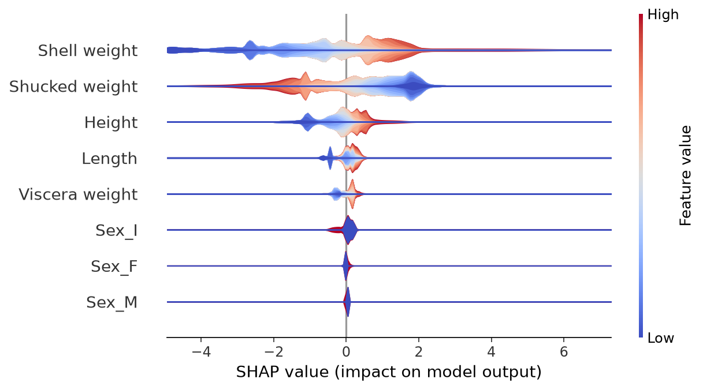
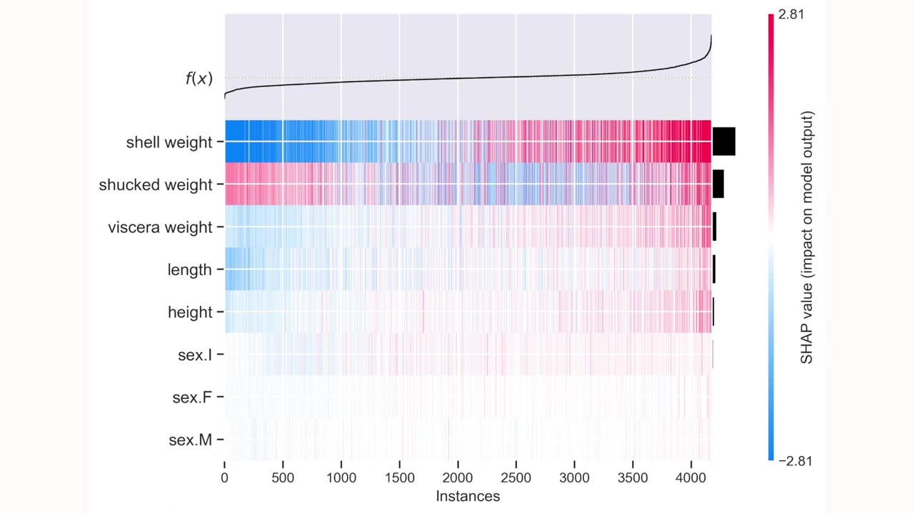

SHAP Violin Plots and Heatmaps
Companion to A Data Odyssey’s video · Conor O’Sullivan
The beeswarm showed the distribution of each feature’s contributions, while the waterfall kept one row’s explanation together. The next two views emphasize those same ideas differently. A violin smooths the distribution of contributions. A heatmap keeps contributions from the same row aligned, making groups of explanations easier to compare.
We will reuse the Abalone explanations from Part 4. No retraining or new reference population is needed. These plots change the presentation of the existing numbers.
A violin shows where contributions concentrate
For one feature, imagine placing all its SHAP values on a horizontal number line. A violin draws a smoothed outline around that distribution. Where the outline is thick, many contributions lie in a similar range. A thin tail means fewer observations reach that range.
The horizontal axis still measures contribution. A long horizontal spread tells us that contributions vary widely; a thick section tells us that values are common there. These are different ideas. A very thick shape close to zero need not represent a highly influential feature.
The layered version adds color to summarize the corresponding feature values. As in a beeswarm, the standard red-to-blue scale represents high-to-low input values. It helps us see whether high input values concentrate among positive or negative contributions.
shap.plots.violin(
explanation.values,
features=rows,
feature_names=list(rows.columns),
plot_type="layered_violin",
)

Read shell weight first, then compare it with the other features. Ask where its distribution lies relative to zero, how far its tails extend, and which input values occupy those regions. These are the same questions the beeswarm answered, with a smoother display.
For the binary sex indicators, there are only two possible input values. A smoothed shape should not be mistaken for intermediate categories that exist in the dataset. If the distinction between categories matters, an explicit category plot is easier to interpret.
A heatmap keeps each prediction in one column
In a SHAP heatmap, each column is an explained row and each horizontal band is a feature. A cell contains the contribution of that feature to that row’s prediction. Following one column vertically therefore gives the feature contributions belonging to one example.
Here the color meaning changes: red and blue encode positive and negative SHAP values, rather than high and low feature values. A red shell-weight cell means shell weight made a positive contribution for that row. It does not, by itself, reveal the actual shell weight.


The bars on the right summarize each feature’s average contribution magnitude. The line above the matrix follows model output across the ordered rows. In the package’s heatmap presentation, the displayed output trace is centered on the baseline; read its scale accordingly rather than interpreting a centered value as an absolute ring count.
Choose an ordering that matches the question
The default heatmap ordering groups similar explanations using hierarchical clustering. Two nearby columns then tend to have similar patterns of contributions. They are not necessarily nearby dates, neighboring row IDs, or shellfish with similar raw measurements.
For a first pass, sorting by predicted ring count is easier to read. With a shared baseline, sorting by the sum of SHAP values gives the same order as sorting by the reconstructed prediction.
predicted_rings = (
explanation.base_values + explanation.values.sum(axis=1)
)
shap.plots.heatmap(
explanation,
instance_order=np.argsort(predicted_rings),
max_display=8,
)Move from left to right and ask which feature bands change as predictions rise. Then inspect an interesting group of columns in the original table. A heatmap can direct us toward a subgroup, but its stripe pattern does not tell us what that subgroup means without examining those rows.
Alternatively, order by shell weight to ask how explanations vary across that measurement. This rearranges the same columns; it does not recalculate their contributions. The chosen order should be part of the caption because it determines what adjacent columns mean.
Keep a route back to individual examples
A useful workflow starts with a broad view and narrows down. Use a violin to notice an unusually long tail, a heatmap to find rows sharing a pattern, and a waterfall to examine a particular prediction. At each step, retain the row identifiers and the original input values.
The regression script also produces our own ordered heatmap. The violin and heatmap documentation describe the options used here. We have so far explained a numerical ring count. Classification keeps the same additive idea, but we must be more careful about the output units.